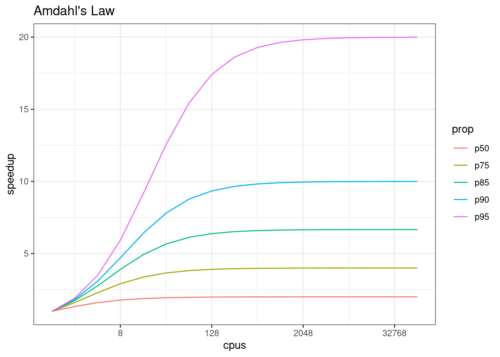

jones@powder:~$ sysctl hw.ncpu hw.physicalcpu
hw.ncpu: 8
hw.physicalcpu: 4Learning Objectives
- Understand what parallel computing is and when it may be useful
- Understand how parallelism can work
- Review sequential loops and *apply functions
- Understand and use the
parallelpackage multicore functions - Understand and use the
foreachpackage functions
9.1 Introduction
Processing large amounts of data with complex models can be time consuming. New types of sensing means the scale of data collection today is massive. And modeled outputs can be large as well. For example, here’s a 2 TB (that’s Terabyte) set of modeled output data from Ofir Levy et al. 2016 that models 15 environmental variables at hourly time scales for hundreds of years across a regular grid spanning a good chunk of North America:

There are over 400,000 individual netCDF files in the Levy et al. microclimate data set. Processing them would benefit massively from parallelization.
Alternatively, think of remote sensing data. Processing airborne hyperspectral data can involve processing each of hundreds of bands of data for each image in a flight path that is repeated many times over months and years.

9.2 Why parallelism?
Much R code runs fast and fine on a single processor. But at times, computations can be:
- cpu-bound: Take too much cpu time
- memory-bound: Take too much memory
- I/O-bound: Take too much time to read/write from disk
- network-bound: Take too much time to transfer
To help with cpu-bound computations, one can take advantage of modern processor architectures that provide multiple cores on a single processor, and thereby enable multiple computations to take place at the same time. In addition, some machines ship with multiple processors, allowing large computations to occur across the entire cluster of those computers. Plus, these machines also have large amounts of memory to avoid memory-bound computing jobs.
9.3 Processors (CPUs) and Cores
A modern CPU (Central Processing Unit) is at the heart of every computer. While traditional computers had a single CPU, modern computers can ship with mutliple processors, which in turn can each contain multiple cores. These processors and cores are available to perform computations.
A computer with one processor may still have 4 cores (quad-core), allowing 4 computations to be executed at the same time.

A typical modern computer has multiple cores, ranging from one or two in laptops to thousands in high performance compute clusters. Here we show four quad-core processors for a total of 16 cores in this machine.

You can think of this as allowing 16 computations to happen at the same time. Theroetically, your computation would take 1/16 of the time (but only theoretically, more on that later).
Historically, R has only utilized one processor, which makes it single-threaded. Which is a shame, because the 2017 MacBook Pro that I am writing this on is much more powerful than that:
To interpret that output, this machine powder has 4 physical CPUs, each of which has two processing cores, for a total of 8 cores for computation. I’d sure like my R computations to use all of that processing power. Because its all on one machine, we can easily use multicore processing tools to make use of those cores. Now let’s look at the computational server aurora at NCEAS:
jones@aurora:~$ lscpu | egrep 'CPU\(s\)|per core|per socket'
CPU(s): 88
On-line CPU(s) list: 0-87
Thread(s) per core: 2
Core(s) per socket: 22
NUMA node0 CPU(s): 0,2,4,6,8,10,12,14,16,18,20,22,24,26,28,30,32,34,36,38,40,42,44,46,48,50,52,54,56,58,60,62,64,66,68,70,72,74,76,78,80,82,84,86
NUMA node1 CPU(s): 1,3,5,7,9,11,13,15,17,19,21,23,25,27,29,31,33,35,37,39,41,43,45,47,49,51,53,55,57,59,61,63,65,67,69,71,73,75,77,79,81,83,85,87Now that’s some compute power! Aurora has 384 GB of RAM, and ample storage. All still under the control of a single operating system.
However, maybe one of these NSF-sponsored high performance computing clusters (HPC) is looking attractive about now:
- JetStream
- 640 nodes, 15,360 cores, 80TB RAM
- Stampede2 at TACC is coming online in 2017
- 4200 nodes, 285,600 cores
Note that these clusters have multiple nodes (hosts), and each host has multiple cores. So this is really multiple computers clustered together to act in a coordinated fashion, but each node runs its own copy of the operating system, and is in many ways independent of the other nodes in the cluster. One way to use such a cluster would be to use just one of the nodes, and use a multi-core approach to parallelization to use all of the cores on that single machine. But to truly make use of the whole cluster, one must use parallelization tools that let us spread out our computations across multiple host nodes in the cluster.
9.4 When to parallelize
It’s not as simple as it may seem. While in theory each added processor would linearly increase the throughput of a computation, there is overhead that reduces that efficiency. For example, the code and, importantly, the data need to be copied to each additional CPU, and this takes time and bandwidth. Plus, new processes and/or threads need to be created by the operating system, which also takes time. This overhead reduces the efficiency enough that realistic performance gains are much less than theoretical, and usually do not scale linearly as a function of processing power. For example, if the time that a computation takes is short, then the overhead of setting up these additional resources may actually overwhelm any advantages of the additional processing power, and the computation could potentially take longer!
In addition, not all of a task can be parallelized. Depending on the proportion, the expected speedup can be significantly reduced. Some propose that this may follow Amdahl’s Law, where the speedup of the computation (y-axis) is a function of both the number of cores (x-axis) and the proportion of the computation that can be parallelized (see colored lines):

So, its important to evaluate the computational efficiency of requests, and work to ensure that additional compute resources brought to bear will pay off in terms of increased work being done. With that, let’s do some parallel computing…
9.5 Loops and repetitive tasks using lapply
When you have a list of repetitive tasks, you may be able to speed it up by adding more computing power. If each task is completely independent of the others, then it is a prime candidate for executing those tasks in parallel, each on its own core. For example, let’s build a simple loop that uses sample with replacement to do a bootstrap analysis. In this case, we select Sepal.Length and Species from the iris dataset, subset it to 100 observations, and then iterate across 10,000 trials, each time resampling the observations with replacement. We then run a logistic regression fitting species as a function of length, and record the coefficients for each trial to be returned.
x <- iris[which(iris[,5] != "setosa"), c(1,5)]
trials <- 10000
res <- data.frame()
system.time({
trial <- 1
while(trial <= trials) {
ind <- sample(100, 100, replace=TRUE)
result1 <- glm(x[ind,2]~x[ind,1], family=binomial(logit))
r <- coefficients(result1)
res <- rbind(res, r)
trial <- trial + 1
}
}) user system elapsed
21.275 0.040 21.322 The issue with this loop is that we execute each trial sequentially, which means that only one of our 8 processors on this machine are in use. In order to exploit parallelism, we need to be able to dispatch our tasks as functions, with one task going to each processor. To do that, we need to convert our task to a function, and then use the *apply() family of R functions to apply that function to all of the members of a set. In R, using apply used to be faster than the equivalent code in a loop, but now they are similar due to optimizations in R loop handling. However, using the function allows us to later take advantage of other approaches to parallelization. Here’s the same code rewritten to use lapply(), which applies a function to each of the members of a list (in this case the trials we want to run):
x <- iris[which(iris[,5] != "setosa"), c(1,5)]
trials <- seq(1, 10000)
boot_fx <- function(trial) {
ind <- sample(100, 100, replace=TRUE)
result1 <- glm(x[ind,2]~x[ind,1], family=binomial(logit))
r <- coefficients(result1)
res <- rbind(data.frame(), r)
}
system.time({
results <- lapply(trials, boot_fx)
}) user system elapsed
22.639 0.000 22.642 9.6 Approaches to parallelization
When parallelizing jobs, one can:
Use the multiple cores on a local computer through
mclapplyUse multiple processors on local (and remote) machines using
makeClusterandclusterApply- In this approach, one has to manually copy data and code to each cluster member using
clusterExport - This is extra work, but sometimes gaining access to a large cluster is worth it
- In this approach, one has to manually copy data and code to each cluster member using
9.6.1 Parallelize using: mclapply
The parallel library can be used to send tasks (encoded as function calls) to each of the processing cores on your machine in parallel. This is done by using the parallel::mclapply function, which is analogous to lapply, but distributes the tasks to multiple processors. mclapply gathers up the responses from each of these function calls, and returns a list of responses that is the same length as the list or vector of input data (one return per input item).
library(parallel)
library(MASS)
starts <- rep(100, 40)
fx <- function(nstart) kmeans(Boston, 4, nstart=nstart)
numCores <- detectCores()
numCores[1] 2system.time(
results <- lapply(starts, fx)
) user system elapsed
1.182 0.000 1.185 system.time(
results <- mclapply(starts, fx, mc.cores = numCores)
) user system elapsed
0.004 0.008 0.696 Now let’s demonstrate with our bootstrap example: ::: {.cell}
x <- iris[which(iris[,5] != "setosa"), c(1,5)]
trials <- seq(1, 10000)
boot_fx <- function(trial) {
ind <- sample(100, 100, replace=TRUE)
result1 <- glm(x[ind,2]~x[ind,1], family=binomial(logit))
r <- coefficients(result1)
res <- rbind(data.frame(), r)
}
system.time({
results <- mclapply(trials, boot_fx, mc.cores = numCores)
}) user system elapsed
11.354 0.208 11.639 :::
9.6.2 Parallelize using: foreach and doParallel
The normal for loop in R looks like:
for (i in 1:3) {
print(sqrt(i))
}[1] 1
[1] 1.414214
[1] 1.732051The foreach method is similar, but uses the sequential %do% operator to indicate an expression to run. Note the difference in the returned data structure. ::: {.cell}
library(foreach)
foreach (i=1:3) %do% {
sqrt(i)
}[[1]]
[1] 1
[[2]]
[1] 1.414214
[[3]]
[1] 1.732051:::
In addition, foreach supports a parallelizable operator %dopar% from the doParallel package. This allows each iteration through the loop to use different cores or different machines in a cluster. Here, we demonstrate with using all the cores on the current machine: ::: {.cell}
library(foreach)
library(doParallel)Loading required package: iteratorsregisterDoParallel(numCores) # use multicore, set to the number of our cores
foreach (i=1:3) %dopar% {
sqrt(i)
}[[1]]
[1] 1
[[2]]
[1] 1.414214
[[3]]
[1] 1.732051# To simplify output, foreach has the .combine parameter that can simplify return values
# Return a vector
foreach (i=1:3, .combine=c) %dopar% {
sqrt(i)
}[1] 1.000000 1.414214 1.732051# Return a data frame
foreach (i=1:3, .combine=rbind) %dopar% {
sqrt(i)
} [,1]
result.1 1.000000
result.2 1.414214
result.3 1.732051:::
The doParallel vignette on CRAN shows a much more realistic example, where one can use `%dopar% to parallelize a bootstrap analysis where a data set is resampled 10,000 times and the analysis is rerun on each sample, and then the results combined:
# Let's use the iris data set to do a parallel bootstrap
# From the doParallel vignette, but slightly modified
x <- iris[which(iris[,5] != "setosa"), c(1,5)]
trials <- 10000
system.time({
r <- foreach(icount(trials), .combine=rbind) %dopar% {
ind <- sample(100, 100, replace=TRUE)
result1 <- glm(x[ind,2]~x[ind,1], family=binomial(logit))
coefficients(result1)
}
}) user system elapsed
20.168 0.311 10.839 # And compare that to what it takes to do the same analysis in serial
system.time({
r <- foreach(icount(trials), .combine=rbind) %do% {
ind <- sample(100, 100, replace=TRUE)
result1 <- glm(x[ind,2]~x[ind,1], family=binomial(logit))
coefficients(result1)
}
}) user system elapsed
21.355 0.004 21.362 # When you're done, clean up the cluster
stopImplicitCluster()9.7 Summary
In this lesson, we showed examples of computing tasks that are likely limited by the number of CPU cores that can be applied, and we reviewed the architecture of computers to understand the relationship between CPU processors and cores. Next, we reviewed the way in which traditional for loops in R can be rewritten as functions that are applied to a list serially using lapply, and then how the parallel package mclapply function can be substituted in order to utilize multiple cores on the local computer to speed up computations. Finally, we installed and reviewed the use of the foreach package with the %dopar operator to accomplish a similar parallelization using multiple cores.
9.8 Readings and tutorials
- Multicore Data Science with R and Python
- Beyond Single-Core R by Jonoathan Dursi (also see GitHub repo for slide source)
- The venerable Parallel R by McCallum and Weston (a bit dated on the tooling, but conceptually solid)
- The doParallel Vignette